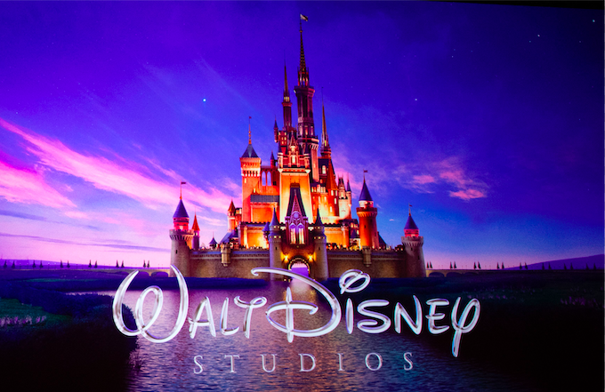
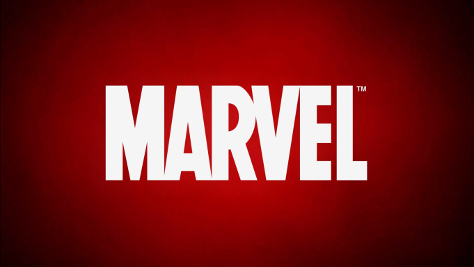
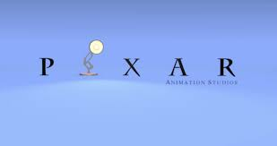

Welcome to HTML

Disney

Marvel

Pixar

Disney
The Walt Disney Company, commonly known as Disney, is an American diversified multinational mass media and entertainment conglomerate headquartered at the Walt Disney Studios complex in Burbank, California.
The Walt Disney Company, commonly known as Disney (/ˈdɪzni/),[3] is an American diversified multinational mass media and entertainment conglomerate headquartered at the Walt Disney Studios complex in Burbank, California.
Disney was originally founded on October 16, 1923, by brothers Walt and Roy O. Disney as the Disney Brothers Cartoon Studio; it also operated under the names The Walt Disney Studio and Walt Disney Productions before officially changing its name to The Walt Disney Company in 1986. The company established itself as a leader in the American animation industry before diversifying into live-action film production, television, and theme parks.
Since the 1980s, Disney has created and acquired corporate divisions in order to market more mature content than is typically associated with its flagship family-oriented brands. The company is known for its film studio division, The Walt Disney Studios, which includes Walt Disney Pictures, Walt Disney Animation Studios, Pixar, Marvel Studios, Lucasfilm, 20th Century Fox, Fox 2000 Pictures, Fox Searchlight Pictures, and Blue Sky Studios. Disney's other main divisions are Disney Media Networks, Disney Parks, Experiences and Products, and Walt Disney Direct-to-Consumer & International. Disney also owns and operates the ABC broadcast network; cable television networks such as Disney Channel, ESPN, Freeform, FX, and National Geographic; publishing, merchandising, music, and theater divisions; and Walt Disney Parks and Resorts, a group of 14 theme parks around the world.
Marvel
Marvel Comics is the brand name and primary imprint of Marvel Worldwide Inc., formerly Marvel Publishing, Inc. and Marvel Comics Group, a publisher of American comic books and related media. In 2009, The Walt Disney Company acquired Marvel Entertainment, Marvel Worldwide's parent company.
Marvel started in 1939 as Timely Comics,[2] and by 1951 had generally become known as Atlas Comics. The Marvel era began in 1961, the year that the company launched The Fantastic Four and other superhero titles created by Steve Ditko, Stan Lee, Jack Kirby and many others. The Marvel brand had been used over the years, but solidified as the company's only brand within a couple of years.
Marvel counts among its characters such well-known superheroes as Spider-Man, the Hulk, Iron Man, Thor, Captain America, Wolverine, Daredevil, the Punisher, Deadpool and Black Panther, such teams as the Avengers, the X-Men, the Fantastic Four, the Defenders and the Guardians of the Galaxy, and supervillains including Doctor Doom, Thanos, Magneto, Ultron, Doctor Octopus, Green Goblin, Red Skull, Loki, Venom and Galactus. Most of Marvel's fictional characters operate in a single reality known as the Marvel Universe, with most locations mirroring real-life places; many major characters are based in New York City.[3]
Pixar
Pixar Animation Studios (also known as Disney/Pixar or simply Pixar)(/ˈpɪksɑːr/) is an American animation studio based in Emeryville, California, that is a subsidiary of The Walt Disney Studios, owned by The Walt Disney Company. Pixar began in 1979 as the Graphics Group, part of the Lucasfilm computer division, before its spin-out as a corporation in 1986, with funding by Apple Inc. co-founder Steve Jobs, who became the majority shareholder.[2] Disney purchased Pixar in 2006 at a valuation of $7.4 billion by converting each share of Pixar stock to 2.3 shares of Disney stock,[4][5] a transaction that resulted in Jobs becoming Disney's largest single shareholder at the time. Pixar is best known for CGI-animated feature films created with RenderMan, Pixar's own implementation of the industry-standard RenderMan image-rendering application programming interface, used to generate high-quality images.
Pixar has produced 21 feature films, beginning with Toy Story (1995), which was the first-ever computer-animated feature film; its most recent film was Toy Story 4 (2019). All of the studio's films have debuted with CinemaScore ratings of at least an "A−," indicating positive receptions with audiences.[6] The studio has also produced dozens of short films. As of July 2019, its feature films have earned approximately $14 billion at the worldwide box office,[7] with an average worldwide gross of $675 million per film.[8] Toy Story 3 (2010), Finding Dory (2016), Incredibles 2 (2018), and Toy Story 4 (2019) are all among the 50 highest-grossing films of all time, with the third aforementioned being the second highest-grossing animated film of all time with a gross of $1.2 billion; the former two films also grossed over $1 billion. Fifteen of Pixar's films are also among the 50 highest-grossing animated films of all time.
- One
- Two
- Three
- Four
- One
- Two
- Three
- Four